Quiver - Finding the Right Board
- Context
- Self-initiated
- Type
- Product Design & Build
- Platform
- Desktop Web
I have surfed for nearly nineteen years, worked in surf shops, taught beginners, and helped hundreds of people choose a board across a counter. The conversation was always the same: a surfer could describe how they surfed and what held them back, and none of it turned into a category, a volume and a length. I did that translation in my head, one surfer at a time.
Quiver is that translation written down. Nine plain questions about how somebody surfs, read into a structured profile and a size range, with three worked examples showing the reasoning. I designed and built it end to end: intake, interpretation, sizing and comparison.
The whole thing runs. Answer the questions, or jump straight to a finished profile and compare the three boards it returns.
Try the interactive demo (opens in a new tab)Interactive prototype. Board examples use sample data.
The Problem
Surfers can describe the feeling, not the fix
An intermediate surfer will tell you a board feels sluggish through turns, or that it dies when a section goes soft. That description is precise. What it is not is a category, a volume, or a length.
The advice that fills the gap is inconsistent and sometimes commercially motivated. The tools are worse: a volume calculator takes your weight and hands back a number, as if how you surf and where you surf were not part of the question.
Research & Discovery
Four questions, before any screen
The surfing side of this I already knew. What I did not know was how to build it, so the discovery work went into the product rather than the domain: reading other interfaces, costing approaches, weighing trade-offs.
How should it think?
Hand the answers to a language model, or write the reasoning myself?
- A model reads anything, and explains itself differently every time
- Chose fixed layers: narrower, and every number traces back to an answer
What data can it stand on?
Where do reliable board specifications come from, and who keeps them current?
- Stock dimensions are scattered, inconsistent and often incomplete
- Chose a small curated set for V1 over coverage I could not maintain
How do people compare complex objects?
The references I kept returning to were not recommendation products. They were interfaces built for inspecting things.
Call of Duty, loadouts
Stats read against the class, not against zero. Quiver's characteristic scales do the same.
The Witcher 3, inventory
Inspect one item without losing the list. Inspect became a layer over the comparison, not a page.
NASA, spacecraft explorers
Guided views of a complex object, each answering one question.
2D or 3D?
The obvious ambition was a board you could rotate. I costed it and backed off: a free-rotating model assumes you know which angle matters, and a surfer choosing between three boards usually does not.
So inspection is guided 2D: a few views, each answering one question. The rendering sits behind one replaceable component, so 3D can drop in later without rebuilding the comparison around it.
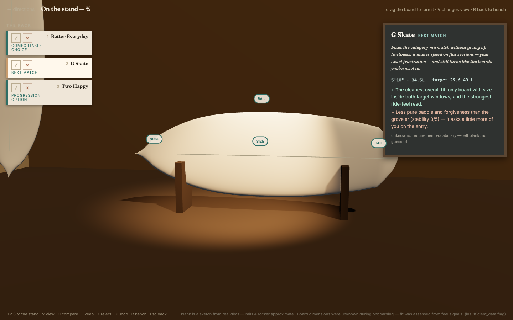
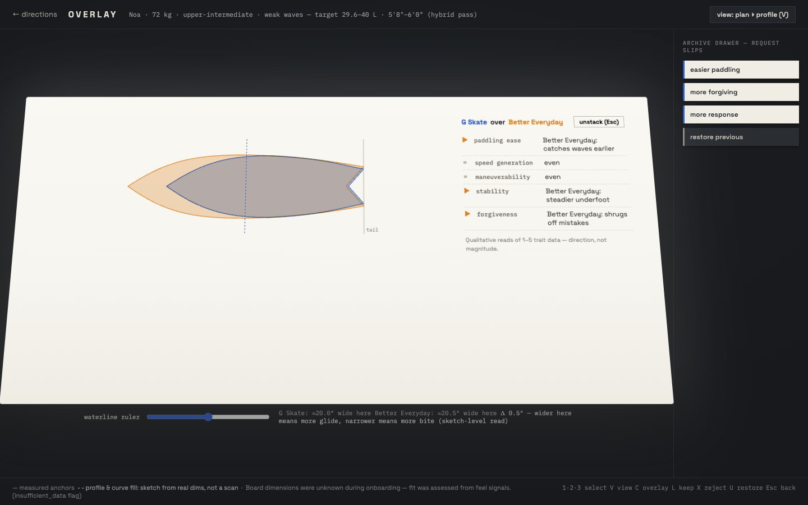
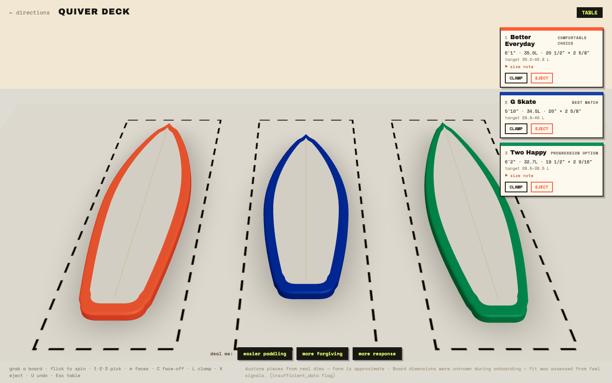
Three directions explored, then set aside. They sharpened the trade-offs rather than producing the shipped design.
Onboarding
Building a picture of the surfer
Nine questions are defined and a surfer answers nine, eight or six. The board questions drop out when there is no regular board to describe, and the dimensions question when the surfer does not know them. Nothing is asked that cannot change the recommendation.
-
01
The board you ride now
-
02
What that board feels likeif it applies
-
03
Whether you know its dimensionsif it applies
-
04
The dimensions themselvesif it applies
-
05
What holds you back
-
06
What you want more of
-
07
The waves you usually surf
-
08
What you can do consistently
-
09
Height and weight
Seven of them are a prompt and a list. Two are not, because the signal underneath them is subjective, and asking for it in words returns an adjective.
07 · Environment
Recognising a break, not grading one
Each option carries a photograph, a wave-height chip and one line of hint, so the answer comes from recognition rather than self-assessment.
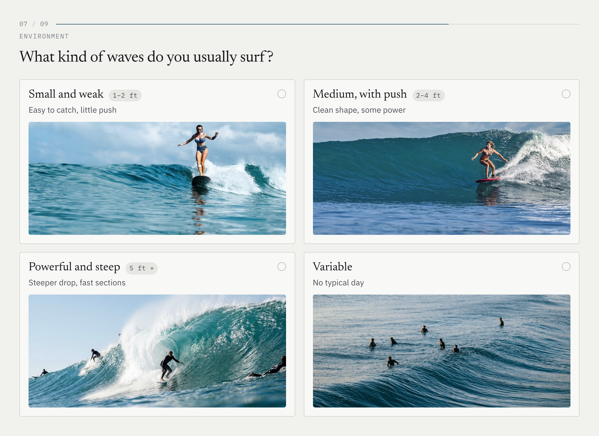
08 · Skill
Behaviour, not self-image
Nobody is asked whether they are a beginner, because that is an identity rather than a fact. Six rungs of observable behaviour instead, and picking one visibly claims everything below it.
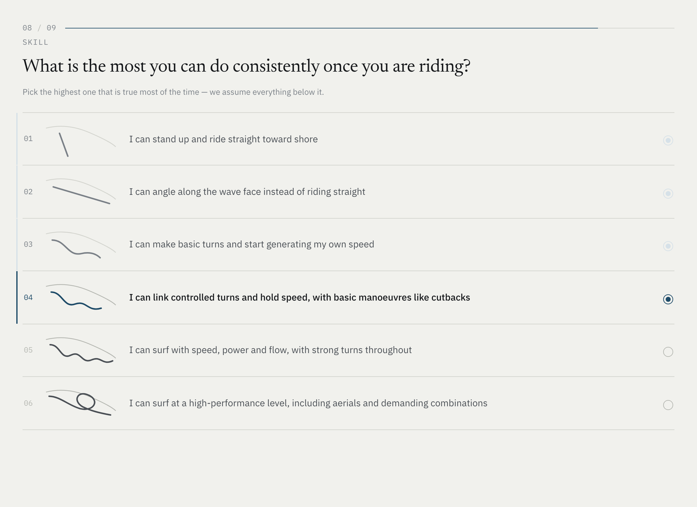
The Profile
The screen that has to earn the recommendation
The profile shows its work instead of hiding it, because a recommendation you cannot interrogate is only an assertion. Four regions carry it: who the surfer is, where they are heading, what to ride, and how to argue with any of it.
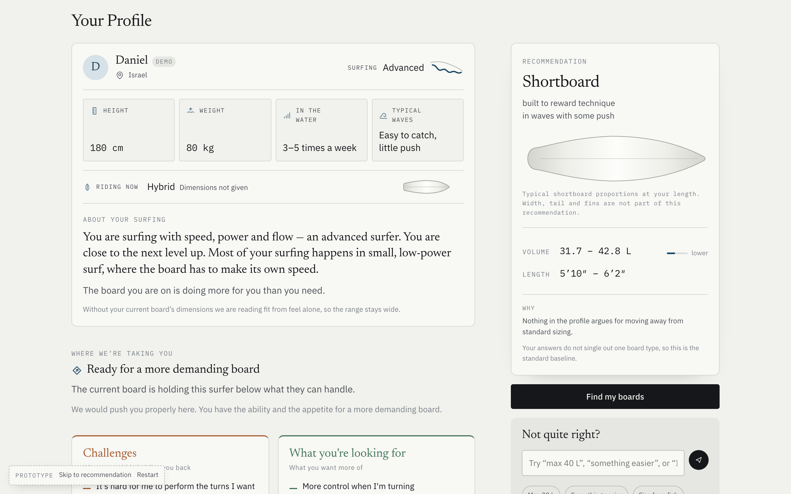
-
1
Your profile
Height, weight, how often you surf, the waves you surf and the board you ride now — the answers restated as one reading, in sentences rather than a score.
-
2
Where we’re taking you
That reading turned into a direction: what holds this surfer back, what they want more of, and whether the board under them is the thing in the way.
-
3
Recommendation
A category and a volume range rather than one number, with the reasoning beside it — including when nothing argues for leaving standard sizing.
-
4
Not quite right?
A sentence is enough to push back. Corrections are read as intent and layered over the profile, so the answer moves without re-answering anything.
Arguing with the system
The calibration panel understands six intents - cap the volume, raise it, lean performance or support, correct a measurement, prefer a category. It refuses rather than guesses: a bare number gets “Is 39 L a ceiling or a floor?” Adjustments sit on top as an overlay, so a preference moves where you sit in the range, never the rules that produced it.
The System
Understanding is a different job from deciding
Reading what somebody told you and deciding what to recommend are different jobs, so they are different layers. Interpretation describes and is forbidden from choosing. The decision layer may answer “we are not sure” rather than force a binary. Sizing has its own contract, so it can be checked alone.
Runs liveSimulatedSpecified, not built
Nine answers
Interpretation
Five readings of the surfer. It describes; it does not choose.
Guidance
Six signals, including where the reading is uncertain.
Sizing
Volume and length ranges — 31.7 to 42.8 L here.
Three example boards
A fixed set, disclosed on screen.
Board matching
Evaluate a real catalogue against the profile.
Explanation agent
Roles and trade-offs written per surfer.
The pay-off is traceability. Every number on the profile walks back to an answer, which is what makes arguing with it meaningful. The last two layers are designed and not built, and the diagram says so.
Comparison
Three different answers, not a ranking
Between the profile and the shortlist, eleven shapes stand on a rack and most of them leave. No counts, no percentages: inventing precision there would undercut everything around it.
The comparison refuses to pick a winner: three qualified boards across four views, with the live profile carried in the top bar.
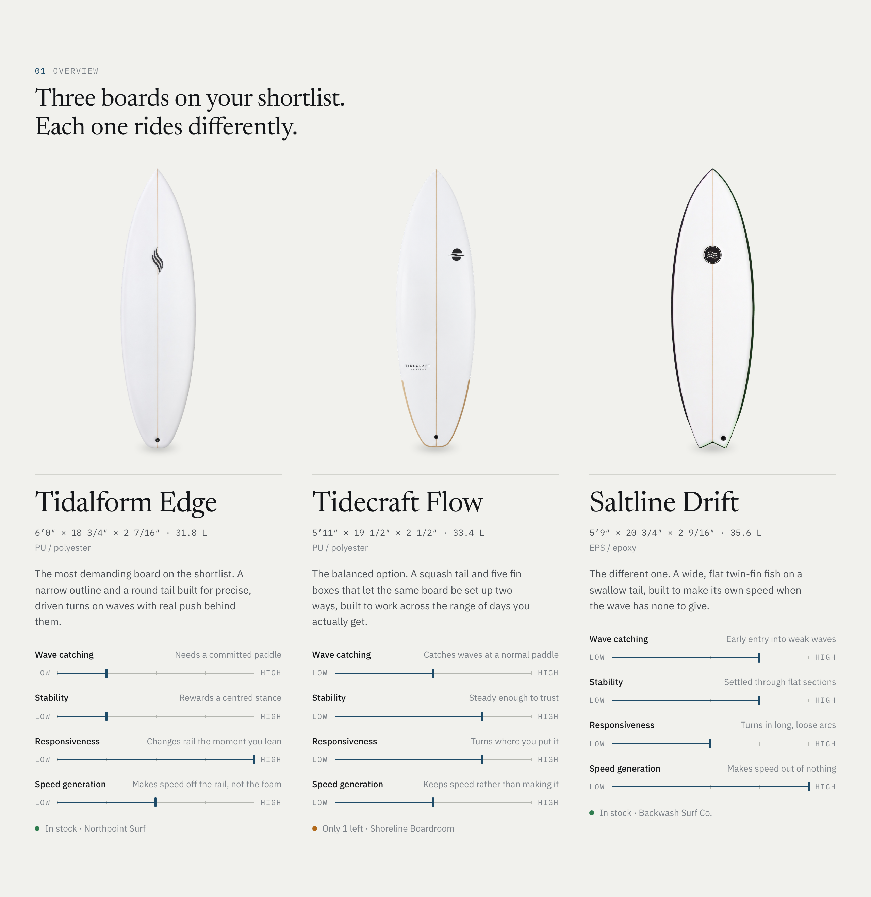
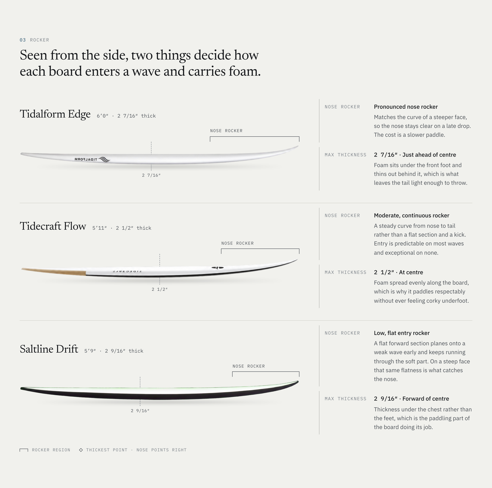
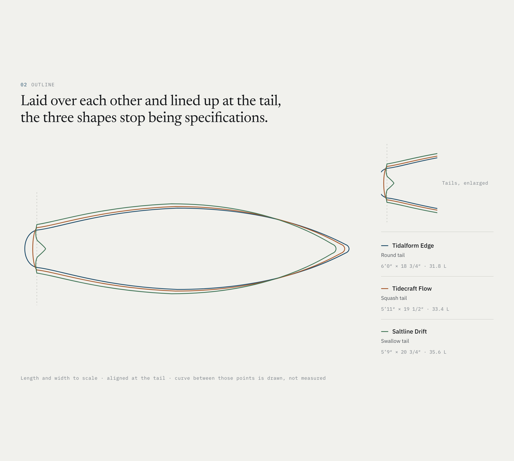
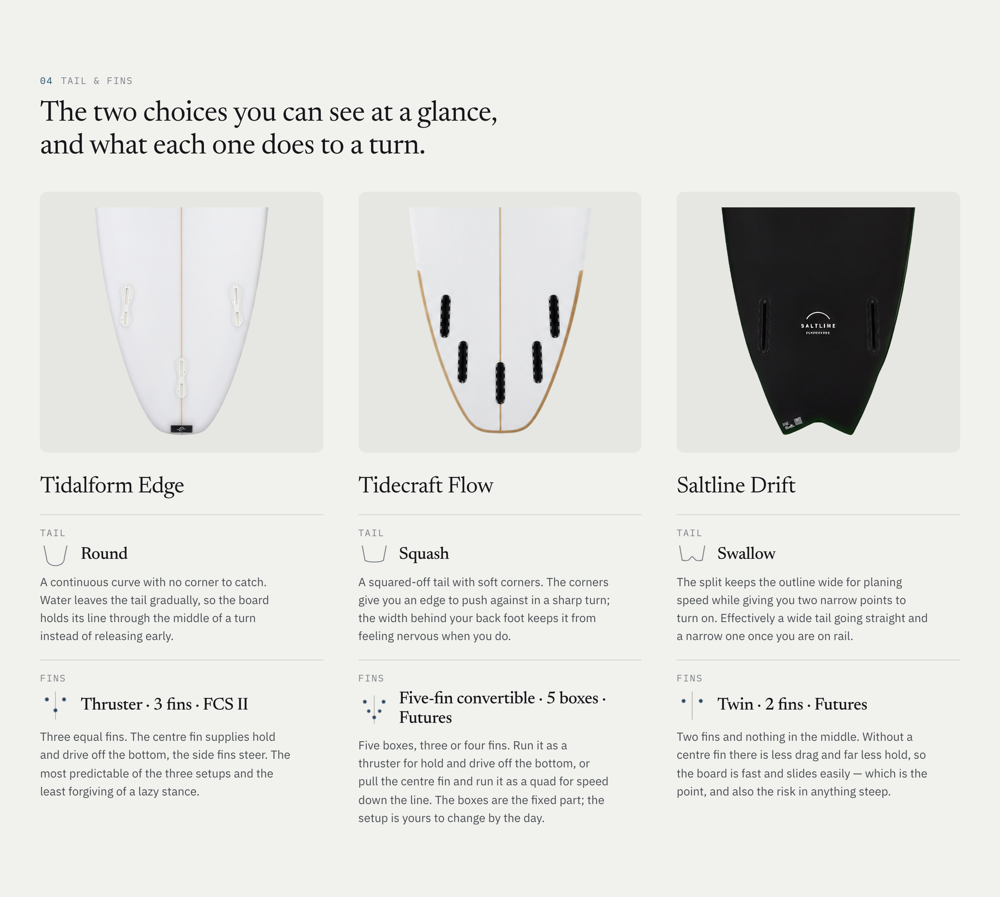
Every observation carries its consequence and its cost. “Pronounced nose rocker” is followed by “the nose stays clear on a late drop. The cost is a slower paddle.”
Inspect
Inspect opens as a layer over the comparison, so you never lose the set you were comparing. It reads in one direction — what the board is, what that means for this surfer, then where to get it.
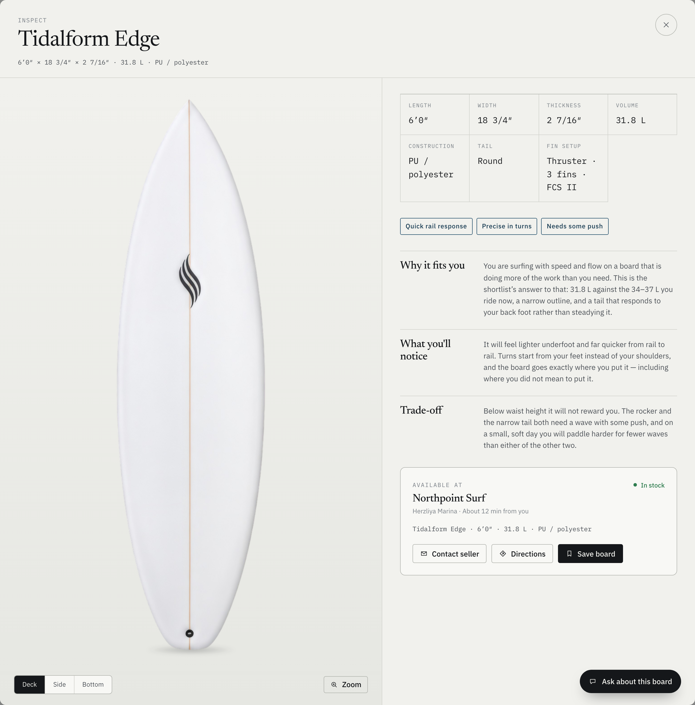
-
1
What it is
Length, width, thickness, volume, construction, tail and fin setup — the facts, stated once in a grid and not repeated elsewhere.
-
2
What it means for you
Why it fits, what you will notice underfoot, and the trade-off. Every board carries all three, because none of them is purely good.
-
3
Where to find it
A shop, a distance and three actions. Simulated end to end: no inventory is queried, no shop exists and the assistant calls no model.
Reflection
Knowing it is not the same as writing it down
Across a counter I could weigh a dozen things at once and answer without unpacking any of it. A system cannot. Every judgement had to become an explicit rule — which signal outranks which, where a range widens, when to stop short of a single number. Writing those down was the work.
What runs
Onboarding, interpretation, guidance and sizing. The profile re-derives on every answer change, so a correction leaves nothing stale behind.
What is staged
The narrowing sequence and the three example boards — the same every time, and the product says so on the profile screen.
What is missing
A catalogue worth matching against. One brand, ten models, with gaps in the fields matching needs, so that layer stayed a specification.
What needs validation
Years in shops and on the water, hundreds of conversations across a counter, informal feedback from surfers and friends during the build. None of it is structured testing — the sizing and the experience around it still have to face a wider group of surfers.
What comes next
Board matching against a real catalogue, so the shortlist comes from stock rather than three fixed examples. The measure I would want once it does, not taken yet: how often the board someone chooses lands inside the recommended range.